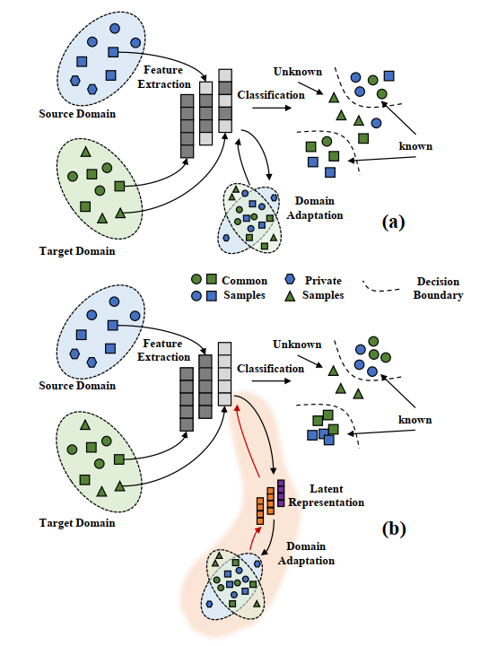

LaFea: Learning Latent Representation beyond Feature for Universal Domain Adaptation
简介：通用域适应问题是指在没有标签先验信息的前提下，将源域知识迁移至目标域来实现针对目标域样本的分类。 该任务的核心问题是如何有效地区分目标域中的公共样本和私有样本。现有方法通常利用一个骨干网络来提取样本特征，而后对该特征进行域 适应操作，从而提升骨干网络在不同域之间的迁移能力。由于通用域适应问题的复杂性，仅通过引导骨干网络的学习可能无法有效地挖掘特征， 因为1）不同域会自然地分散骨干网络的学习，2）骨干网络可能会保留一些与域适应问题不相关特征，如背景信息等，这些信息会影响域适应的进行。 因此，本文提出了一种新的通用预适应方法，该方法聚焦于特征之上的潜在表达，通过对潜在表达的引导来进一步增强特征的有效性，从而提升骨干网络在不同域的迁移性。 具体而言，我们设计了一种基于GAN结构的模型将由骨干网络提取的特征转化为一种潜在表达，然后提出了新的对抗损失函数来引导潜在表达的学习。 值得注意的是，这种潜在表达仅在模型的训练过程中使用，因此没有增大模型在测试阶段的资源消耗。 本文在四个常用域适应数据集上对所提方法进行了验证，实验表明该方法显著地提升了通用域适应的性能。
本文第一作者为2021级博士生吕清轩，指导老师李岳尊、董军宇教授。

作者: Qingxuan Lyu, Yuezun Li#, Junyu Dong#, Ziqian Guo.
期刊名称: IEEE Transactions on Circuits and Systems for Video Technology (TCSVT). CCF B. 影响因子5.859.
© AI Security Group (AISec) @ OUC